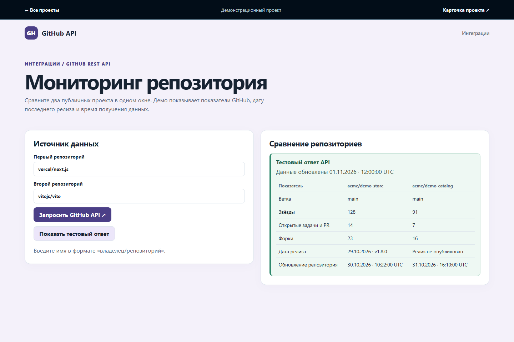

Интеграции / Демонстрационный проект
Мониторинг репозитория через API
Для команды, которой нужно сравнить два открытых проекта перед выбором инструмента. Данные о репозиториях и релизах собраны в одной таблице.
Что умеет решение
Подключил GitHub REST API и вывел сравнение двух репозиториев, даты публикации последних стабильных релизов, время обновления и обработку ошибок.
Попробуйте в демо
Введите два публичных репозитория и нажмите «Запросить GitHub API». Для просмотра без интернета откройте тестовый ответ с вымышленными данными.

Доступны запрос к публичному API и автономный пример. Данные репозитория ↗ · Данные релиза ↗

